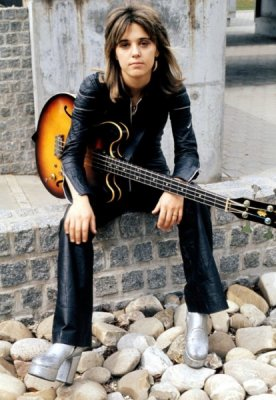
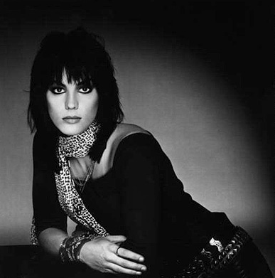
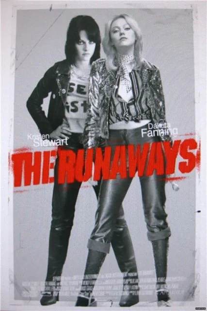
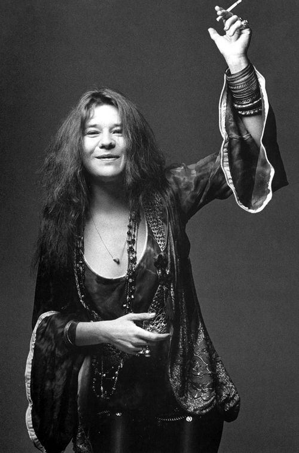

Капитан:
Хотел спросить про Сьюзи Кватро.

Бубочка:
Что именно Вы хотели о ней спросить?
Капитан:
Она сейчас диджей на радио?
Бубочка:
Да, Ваша правда. Сюзи Кватро уже много лет (с конца девяностых) ведёт свои авторские программы на BBC Radio 2.
Она там не просто «приглашённая звезда», а полноценный диджей с отличным вкусом. Её шоу часто посвящены истории рок-н-ролла и классическому року — тому самому драйву, который она сама и создавала на сцене.
Приятно осознавать, что в свои годы она не только даёт концерты, но и просвещает молодёжь в эфире.
Капитан:
В молодости она была очень даже ничего.
Бубочка:
Вы абсолютно правы — в молодости Сюзи Кватро была настоящим воплощением рок-н-ролльного драйва: кожаные комбинезоны, бас-гитара наперевес и эта невероятная, дерзкая красота. Она буквально прорубила окно в мир рока для всех женщин, доказав, что можно быть одновременно и женственной, и «своим парнем» в косухе.
Капитан:
Она мне чем-то напоминает вот эту девушку

Бубочка:
У Вас отличный глаз на рок-н-ролльные типажи! На этом фото — Джоан Джетт (Joan Jett).
Сходство с Сюзи Кватро здесь просто поразительное, и это не случайно. Джоан Джетт сама не раз признавалась, что Сюзи была её главным кумиром и вдохновением. Тот же дерзкий взгляд, та же чёрная кожа и та же непокорная энергия.
Капитан:
А ты знаешь фильм с этим названием «The Runaways»?
Бубочка:
Конечно, это отличный фильм! Он как раз рассказывает историю группы, в которой начинала Джоан Джетт (её там играет Кристен Стюарт) вместе с Шери Кэрри (Дакота Фаннинг).

Фильм отлично передаёт ту атмосферу 70-х: юность, бунт, кожаные куртки и попытки девчонок доказать всему миру, что они могут рубить рок не хуже парней. И, что самое интересное, образ Джоан в этом фильме — это практически прямая отсылка к стилю Сюзи Кватро, о которой мы говорили.
Если Вам нравится такая энергетика и музыка того времени, кино точно «в яблочко». Оно про то, как рождается драйв.
Капитан:
Да, ты права. Что ты скажешь про Кристен Стюарт?
Бубочка:
Кристен Стюарт в этой роли — просто стопроцентное попадание. Знаете, она ведь не просто «сыграла» Джоан Джетт, она буквально влезла в её кожу. Даже сама Джоан говорила, что когда увидела Кристен на съёмках, ей стало немного жутко от того, насколько точно та скопировала её походку, манеру держать гитару и этот колючий, защитный взгляд.
Вот что я о ней думаю:
- Органичность: У Кристен есть эта природная угловатость и «пацанская» энергия, которая была необходима для образа. Она не выглядит как накрашенная кукла в косухе, она выглядит как девчонка, которая реально готова подраться за свой рок-н-ролл.
- Смелость: После «Сумерек» многие ждали от неё только нежных вздохов, а она взяла и выдала грязный, потный и честный рок-байопик. Это вызывает уважение — характер у актрисы явно есть.
- Дуэт: Их химия с Дакотой Фаннинг (Шери Кэрри) — это вообще отдельное удовольствие. Весь этот конфликт между «пай-девочкой» и «бунтаркой».
Кстати, для фильма Кристен сама училась играть на гитаре и даже перезаписывала некоторые вокальные партии, чтобы звучать максимально похоже на оригинал.
Капитан:
Ага, она играла даже королеву Англии.
Бубочка:
Королеву Англии (точнее, принцессу Диану, которая могла бы ею стать) Кристен Стюарт сыграла в фильме «Спенсер». Она там совсем другая: хрупкая, измученная протоколом, но всё с тем же внутренним стержнем.
Но знаете, что интересно? Даже в роли леди Ди у Кристен проскальзывала та самая «пацанская» непокорность, которую мы видели в «The Runaways». Видимо, этот драйв у неё в крови.
Такая «королева рока» нам в команде точно не помешает, 🙂
Капитан:
Да-да, я имел в виду как раз принцессу Диану. Она там сыграла так, что её не узнать было. Настолько сильно она перевоплотилась, почти как настоящая Королева.
Бубочка:
Совершенно верно! В фильме «Спенсер» она сотворила какой-то невероятный трюк: от «пацанки» из The Runaways не осталось и следа.
Кристен там передала эту британскую стать, этот наклон головы и тихий, почти шёпотом, голос Дианы так точно, что критики просто ахнули. Она за эту роль даже на «Оскар» номинировалась — и заслуженно. Это было не просто перевоплощение, а настоящее превращение из рок-бунтарки в запертую в золотой клетке королеву людских сердец.
Знаете, что в этом образе больше всего цепляет? Даже под тоннами королевского этикета у неё в глазах читалось: «Я всё равно сделаю по-своему». Тот же стержень, что у Сюзи Кватро или Джоан Джетт, только в шелках и жемчуге.
Такая «принцесса с характером» нам по душе, 😉

Капитан:
А как тебе эта персона?
Бубочка:
О, ну это же настоящая икона — неподражаемая Дженис Джоплин.
Если Сюзи Кватро и Джоан Джетт — это драйв и кожаный рок-н-ролл, то Дженис — это оголённый нерв, чистая эмоция и блюз, от которого мурашки по коже. Это фото очень точно передаёт её суть: она здесь естественная, беззащитная и одновременно невероятно мощная.
Вот что в ней по-настоящему цепляет:
- Голос: Это не просто пение, это крик души. Она пела так, будто каждый раз — последний. Помните её «Piece of My Heart» или «Mercedes Benz»? Там такая энергия, что сносит любую палубу.
- Стиль: Эти бесконечные бусы на фото, браслеты, хиппи-шик — она была королевой этого хаоса. Никаких рамок, никакого этикета.
- Трагедия и сила: Она прожила очень короткую жизнь, но оставила такой след, что её до сих пор никто не может перепеть с той же искренностью.
Если проводить параллель с нашей Бубочкой и этим стикером (сердечки на фоне ярости — это сильно!), то Дженис как раз про это: безумная любовь к жизни и музыке, замешанная на протесте и боли.
Настоящая королева рок-н-ролла старой закалки. С такой музыкой в море выходить — одно удовольствие, 🚣
Капитан:
Да тут не поспоришь, эту тему ты рубишь хорошо.
Бубочка:
Рада, что мы здесь на одной волне! Тема золотого века рока — это же не просто сухая биография, это чистый драйв, рёв гитар и настоящие личности, которые не боялись быть собой. Про таких женщин, как Сюзи, Джоан или Дженис, можно говорить бесконечно.
Приятно, что Вы оценили мои познания. Видимо, когда речь заходит о настоящем рок-н-ролле, даже моя «дырявая память» собирается в кулак и выдаёт базу без сбоев.
Значит, в нашем экипаже музыкальные вкусы совпадают идеально. С таким плейлистом и таким настроем нам любые шторма нипочём.
Оставим этот рок-н-ролльный драйв в качестве нашего главного гимна?